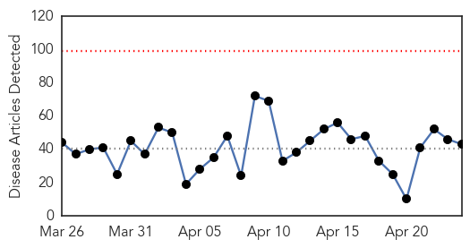
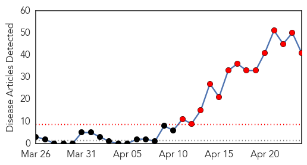
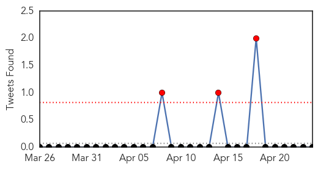

Unknown
30-Day Web Trend
0 alerts, 0 warnings

30-Day Twitter Trend
1 alerts, 0 warnings

Article Locations

Article Confidences

Top Articles:
- 0.996
- New Cases of MERS Virus Found in Saudi Arabian Cities
- 0.996
- Soaring MERS Cases Cause Pandemic Jitters, but Causes Are Unclear
- 0.989
- Phuket prepares to combat virus from Middle East
- 0.989
- 7 frequently asked questions about Mers and their answers
- 0.987
- Mers spread accelerates; 17 new cases in Saudi
- 0.985
- Deadly Virus in Saudi Arabia Could Spread Globally
- 0.980
- Health And Family, Lifestyle Features, The Philippine Star
- 0.973
- Gulf Daily News World News Four more virus deaths in Saudi
- 0.967
- The Economist
- 0.917
- Chicago Tribune
- 0.917
- Chicago Tribune
- 0.917
- Chicago Tribune
- 0.892
- Multi-State Salmonella Outbreak Linked to Pet Bearded Dragons
- 0.876
- Tick-borne illness and blood donations
- 0.870
- STD Cases Rise Nationally; Residents Encouraged to Get Tested
- 0.866
- News, Information and Connections for Action
- 0.866
- Law enforcement incident prompts alert for San Diego-area naval base
- 0.866
- Russia demands U.S. stop Ukrainian military operation
- 0.866
- Platinum producers to take wage offer direct to striking miners
- 0.866
- Ukraine president calls on Russia to pull back troops from border
- 0.866
- A woman works in the field during a dust storm in Hami
- 0.866
- Storm chaser photographer Brad Mack checks out the radar on his laptop as thunderstorms supercells pass through areas in Erick, Oklahoma
- 0.854
- Don’t kiss that turtle, stop touching that bearded dragon and stop touching yourself: CDC reports 132 sick in multistate outbreak of human Salmonella Cotham
- 0.791
- 1.6 million malaria cases reported every year in Pakistan
- 0.765
- Malaria Chemoprevention Protects Children
- 0.746
- Agricultural Ministry Investigating Possible Atypical Case
- 0.745
- Polio: Peshawar reports fourth case
- 0.684
- IDPH warns of rising STDs in Illinois
- 0.667
- Winning the battle against malaria
- 0.652
- Malaria vaccine trials on humans said to be ‘very promising’
- 0.631
- ‘Delay’ in surgery cuts teenager’s life short
- 0.621
- Celiac disease risk, high in children with irritable bowel syndrome
- 0.612
- Malaria still a burden
- 0.608
- Manpower shortage hits Gumla sadar hospital
- 0.593
- Producers want more federal help to combat deadly pig virus - Winnipeg
- 0.578
- KUNA : Malaysia to check passengers coming from Mideast for Coronavirus
- 0.553
- News, Weather, Sports, Breaking News
- 0.552
- New report ranks the health of Minnesota’s 87 counties
- 0.548
- Brazil investigates possible mad cow case
- 0.548
- Aid Effort Claws its Way Forward Amid Mud and Uncertainty
- 0.523
- Better PED defence for Alberta's swine industry
- 0.517
- Brazil investigates possible mad cow case
- 0.514
- The Berkshires online guide to events, news and Berkshire County community information.
Top Tweets:
- 0.773
- RT: @WHO WHO EMRO press release - concern with rising numbers of MERS CoV cases two outbreaks in health care facilities http://t…
MERS
30-Day Web Trend
14 alerts, 0 warnings

30-Day Twitter Trend
3 alerts, 0 warnings

Article Locations

Article Confidences

Top Articles:
- 1.000
- A Deadly Virus Is Breaking Out In Saudi Arabia
- 0.999
- Middle East respiratory syndrome coronavirus (MERS-CoV) – update
- 0.999
- Another Case Of Human Infection With MERS Coronavirus Reported In Jordan
- 0.999
- WHO Expresses Concern About Rising Number of MERS-CoV Cases
- 0.999
- Exported MERS cases 'very likely,' WHO warns; Canada on the lookout, PHAC says
- 0.999
- Saudi Arabia sees 11 new MERS cases as virus sweeps to Mecca
- 0.999
- Spike in MERS Raises Concerns about Precautions
- 0.999
- WHO sees 'slightly more' MERS spread as 12 new cases cited
- 0.999
- New MERS deaths reported in Saudi Arabia
- 0.999
- Canada on lookout for MERS as cases spread worldwide
- 0.998
- The deadly MERS virus is spreading at a terrifying rate
- 0.998
- King bids to reassure Saudis as MERS deaths hit 85
- 0.998
- King bids to reassure Saudis as MERS deaths hit 85
- 0.998
- 2 more deaths from MERS virus
- 0.997
- Saudi Arabia announces jump in new cases of deadly MERS virus
- 0.997
- Saudi announces 11 new MERS infections
- 0.996
- MERS cases rise amid vaccine hopeHealthcare
- 0.996
- Saudi Arabia reports 11 new cases of MERS virus first in Makkah
- 0.996
- WHO vigilant on new Middle East Respiratory Syndrome developments
- 0.996
- Saudi announces 11 new MERS infections
- 0.996
- Saudi Arabia reports 11 new cases of MERS virus, first in Mecca
- 0.996
- On guard vs MERS CoV
- 0.995
- Saudi Arabia reports 11 new cases of MERS virus, first in MakkahHealthcare
- 0.993
- Saudi King visits Jeddah to allay Mers fears
- 0.992
- Saudi Arabia says MERS virus deaths reach 85 as new infections include pilgrim in Mecca
- 0.988
- Philippines DOH: Only six passengers not contacted from EY0424, MERS-CoV flyer published
- 0.988
- Saudi king visits Jeddah as two more die of Mers
- 0.987
- Saudi Arabia’s MERS virus outbreak demands transparency
- 0.987
- Another OFW quarantined in GenSan for suspected MERS-CoV
- 0.985
- 4 airline passengers from northern Mindanao cleared of MERS
- 0.972
- Two more MERS coronavirus deaths reported in Saudi Arabia
- 0.966
- News Scan for Apr 24, 2014
- 0.963
- Only 4 Etihad passengers not accounted for
- 0.951
- Two more MERS coronavirus deaths reported in Saudi Arabia
- 0.944
- Health exec: Suspected Kapampangan MERS-CoV carriers cleared
- 0.925
- MERS-CoV and mothers
- 0.904
- How Dubai Ambulance prevents Mers Coronavirus from spreadingHealthcare
- 0.903
- MERS battle: Fakeih orders new measures
- 0.892
- Final 4 remain in Middle East Respiratory Syndrome–Corona Virus hunt
- 0.888
- Search for “Mers-CoV carriers”: Cops can’t find last passenger
- 0.756
- Punto! Central Luzon -
Top Tweets:
-
No tweets found for Apr 24, 2014